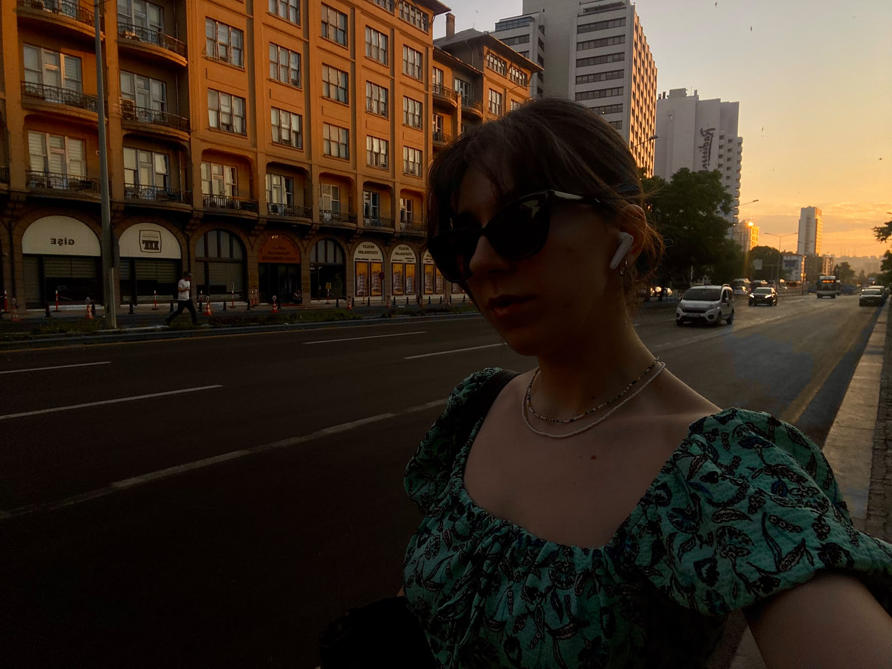

The Özge Times
Geomatics · Maps · Art · Curiosity
Geomatics Student Turns Data into Practical Solutions

ANKARA — Özge Özdemir is a fourth-year Geomatics Engineering student at Hacettepe University. She has built her theoretical background and technical skills around spatial data analysis, remote sensing and GNSS technologies.
When she faces an engineering problem, she works with artificial intelligence tools as a partner: she gives them the right prompts and structure, generates Python code and integrates it into her projects. She enjoys bringing technology into her workflow to create practical solutions.
Her peers know her as a clear communicator who grasps complex topics quickly and explains them simply. In team projects she is cooperative, constructive and focused on common goals.
Education
B.Sc. in Geomatics Engineering, Hacettepe University, Ankara (2022 – present).
Bridging disciplines: spatial data intelligence in unusual areas such as forensic sciences.
Geodesy & AI: AI-assisted Python solutions for coordinate transformations.
LiDAR & 3D: data collection and processing with GreenValley 360 MLS.
GIS: organizing and analyzing spatial data with QGIS.
Photogrammetry: basic 3D modeling with PhotoModeler.
Remote sensing: satellite imagery and sensor types.